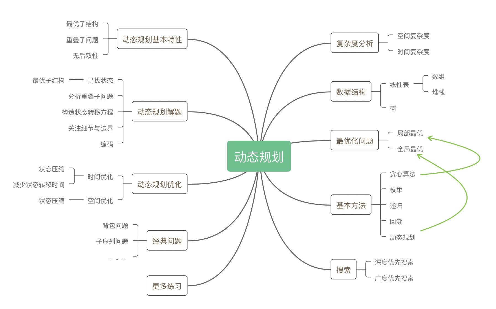

- 00 导读 动态规划问题纷繁复杂，如何系统学习和掌握它？.md.html
- 00 开篇词 为什么大厂都爱考动态规划？.md.html
- 01 硬币找零问题：从贪心算法说起.md.html
- 02 暴力递归：当贪心失效了怎么办？.md.html
- 03 备忘录：如何避免递归中的重复计算？.md.html
- 04 动态规划：完美解决硬币找零.md.html
- 05 面试即正义第一期：什么样的问题应该使用动态规划？.md.html
- 06 0-1背包：动态规划的Hello World.md.html
- 07 完全背包：深入理解背包问题.md.html
- 08 子数组问题：从解决动归问题套路到实践解题思路.md.html
- 09 子序列问题：详解重要的一大类动态规划问题.md.html
- 10 面试即正义第二期：常见的动态规划面试题串烧.md.html
- 11 动态规划新问题1：攻破最长递增子序列问题.md.html
- 12 动态规划新问题2：攻破最大子数组问题.md.html
- 13 动态规划算法设计的关键：最优子结构与状态依赖.md.html
- 14 面试即正义第三期：刷题指南，熟能生巧.md.html
- 15 课程回顾与总结（上）.md.html
- 16 课程回顾与总结（下）.md.html
- 加餐 买卖股票：常见且必考的动态规划面试题.md.html
- 结束语 在我家的后院养长颈鹿.md.html
- 捐赠
00 导读 动态规划问题纷繁复杂，如何系统学习和掌握它？
你好，我是卢誉声。
你是否曾经有过，或者正在经历这样的体验，那就是在学习和掌握了一些数据结构和算法后，面对一个较为复杂的面试题，仍然无从下手？
那个问题看起来好像可以使用递归，但是我该怎么遍历整个数据结构呢？-
这个问题看起来需要穷举，但排列组合好像挺难的……-
这里的排列组合情况实在太多了，我到底该怎么优化时间复杂度？
其实，几乎所有人在初学算法和动态规划时都会有这种感受，特别是当待解决的问题步入“穷举”这个不得了的领域时。穷举从来都不是一个好的解决方案，因此针对这类问题的求解方法真是八仙过海、各显神通，我们很难直接从这些解法中找到规律，同时这些解法又晦涩难懂。
正因如此，在面试中如果发现问题需要使用穷举或动态规划，很多人就会变得胆战心惊，无从下手。
但我想告诉你的是，数据结构和算法虽然从表面上看纷繁复杂，但常用的基本思想和方法还真的就不多。这同样适用于动态规划问题，它简直就是模板、套路届的典范。因此，只要我们掌握了正确的学习方法，形成经验式总结，那么当我们再去面对看似“玄幻”的动态规划问题时，就再也不是什么难事了。
所以说，动态规划作为算法面试问题中的一项重要议题，从表面上看似纷繁复杂，但有规可循。今天，我会把自己这些年来总结的学习窍门、遇到的问题和解题思路，进行归纳总结，梳理出一条清晰的路径给你，即如何系统学习和掌握动态规划。我期待这个专栏能让你产生全新的认识，收获清晰的解题思路，轻松跨过大厂算法面试这道坎。
建立扎实的基础知识体系
首先，我想强调的是，先掌握基础数据结构和算法，再来谈动态规划。
动态规划不仅名字听起来十分高级，它也的确是一种高级的解决问题的思想。为了更好地理解这个思想，掌握基础数据结构就显得尤为重要了，比如高维数组这样的数据结构，就经常出现在动态规划解法当中。其次是算法，像是递归、搜索和迭代这些常见的算法，都会作为工具在动态规划解法中使用。
这里我再次拿出了开篇词中那张“基石”的图片。没错，你完全可以这样理解：掌握基础数据结构和算法，就是学习动态规划的基石，怎样强调其重要性都不过分。

接着，还有一个值得强调的问题，就是锻炼算法编码能力，请不要忽视实践的力量。我曾不止一次在面试环节中，看到面试者在白板上纠结于这样的问题：我是否该在循环上加上等号这个条件？
- 加等号？
for (int i = 0; i <= MAX_COUNT; i++) { ... }
- 还是不加等号？
for (int i = 0; i < MAX_COUNT; i++) { ... }
- 还是换个方法？
for (int i = 0; i < MAX_COUNT + 1; i++) { ... }
不知道你看到这里，是否会心一笑？是的，在面试过程中，白板是没办法拿给我们做现场调试的。因此，能否快速地写出干净漂亮的代码，不仅能让自己的思路愈发清晰，还能尽量避免错误。
正所谓细节是魔鬼，在平时学习、练习的过程中，你要重视细节、重视细节、重视细节，重要的事情说三遍。
透彻理解动态规划的基本方法论
我刚才有提到，动态规划是一种思想，是一种高级方法。我们说算法是一种简单的经验总结和套路。那什么是思想呢？相较于算法，思想更多的是指导你我来解决问题的。既然是思想，那这个东西就比较难落实到实践上来。
为此，我们必须找到一些规律，来指导我们解决动态规划问题。这些规律或特征包括：寻找子问题、递归求解、重叠子问题与无后效性、状态存储。
如果你完全没有接触过动态规划，你可能会觉得这几个词已经够头疼了，但其实它们都很简单，在接下来的课程里，我会带着你弄清楚这里的每一个概念，同时也要让它们落到实处，看在一个具体动归问题下它们是如何发挥作用的。
那么在理解这些概念及其背后的深意之后，我们需要对其进行归纳总结。这么做的主要目的在于，你可以拥有一个清晰的判断标准：哪些问题应该使用动态规划来解，而哪些不应该或不能使用动态规划来解。避免盲目地使用动态规划来解题，弄清楚这个问题后，我们才能有的放矢地解决算法难题。
因此，你完全不需要担心，我们的“车”很稳，且车速适中。
掌握经典问题，总结解题思路
掌握经典的动态规划问题特别重要，因为很多问题都是从这些经典问题延伸出来的，在后面的课程中，你就会看到这一点。
在你掌握了诸如背包问题、子序列问题或子数组问题之后，你就会发现这些问题都可以进行归纳总结。当然了，作为专栏，我会给出详细的经验总结，并在后续课程中的恰当时机给出严格的推导。
这些经验总结在 90% 以上的情况下都是有效的，易于理解，而且十分适合用来应对面试。所以，我希望你也能在接下来的学习过程中，建立自己的经验总结，这些总结可以是基于这个专栏的经验总结之上的，也可以是你在学习的过程中发现的。
既然我们主要想解决的问题是面试，那么在学习过程中辅以刷题就十分重要了。首先，在专栏中提到的算法问题，你都应该上手自己去实现一遍，这样比单纯的读效果要好上很多！
其次，刷题也要讲究一个度，我当然希望你能够轻松应对国内大厂或国际大厂的算法面试环节，但是你还是应该循序渐进，慢慢提升刷题数量和刷题的题目难度。正所谓欲速则不达！
最后，把每一道题目吃透，记录下编写代码时的思考，以便于在未来复习的过程中加深和巩固。
话说回来，如果你能认真吃透本专栏讲解的题目和经验总结，那么就足以应对这些面试了。
及时总结，举一反三
其实吧，我们常说人工智能是人工智障，这么说并不过分，因为计算机真的很笨，它唯一能解决的问题就是穷举。对，你没有听错，它只能穷举所有可能性。
动态规划的思想是从一系列算法中演进而来的。贪心算法是求解整体最优的真正思路源头，我们从那里开始，考虑穷举的问题，最终通过优化形成了一个比较完美的总结。而这个总结，正是动态规划思想。
所以你看，即便是高级如动态规划这样的思想，也是通过不断的总结而得到的。而经过我们前面这一系列的总结，便形成了下面这幅脑图，你可以通过这幅图对学习动态规划有一个全面的了解。

我刚才就提到了总结解题思路，那么除了本专栏为你总结的经验和解题模板之外，我建议你也在学完每一课之后记录下自己的理解。
我有一个习惯，就是在刷题之后会把关键信息做一个总结，然后分享到刷题网站上。随着时间的推移，有些分享会被人点赞。虽然只是一个不起眼的点赞，但真落到你身上时，它还是会成为一个积极的推动力，会莫名地鼓励你在以后的刷题过程中继续分享观点。就算观点不对，有人给你指了出来，岂不也是一次免费的学习机会？
而这个专栏就为大家提供了一个很好的交流平台，我期待着你能把经验总结和思考，抑或是问题分享出来，让大家一起学习探讨。让总结、分享成为一个习惯，形成正向刺激。
那不如就从今天开始，先分享分享你的学习计划吧？让我们一起开启这趟有趣的动态规划学习之旅。
© 2019 - 2023 Liangliang Lee. Powered by gin and hexo-theme-book.